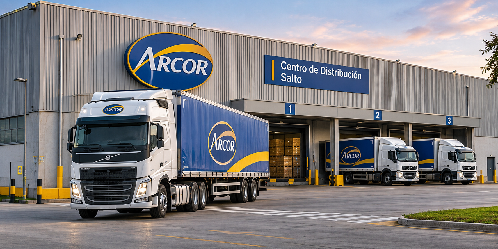
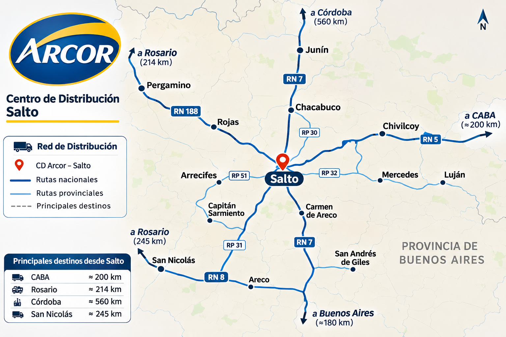

Inicio / Flota
Operaciones Logísticas - Arcor Salto
El Portal Logístico Arcor Salto es una plataforma académica diseñada para representar la gestión de transporte, almacenamiento y distribución de productos alimenticios. Su objetivo es facilitar la organización de las operaciones logísticas, el seguimiento de envíos y la coordinación de entregas hacia diferentes destinos de distribución.
Gestión de la Flota
La operación logística contempla la planificación de rutas, la asignación de unidades de transporte y el control de las entregas. Estas actividades permiten mejorar la eficiencia operativa, optimizar los recursos disponibles y mantener la trazabilidad de la mercadería durante su distribución.

Rastreo de Envíos
Ingrese el código de seguimiento de su carga para consultar el estado del envío.
Red de Sucursales y Cobertura Logística
La red logística propuesta para Arcor Salto contempla distintos centros operativos que permiten organizar el almacenamiento, la consolidación de cargas y la distribución de mercadería hacia diferentes destinos.
Centro Logístico Salto
Ubicación: Salto, Buenos Aires.
Función: Recepción, almacenamiento y preparación de pedidos.
Nodo de Distribución Rosario
Ubicación: Rosario, Santa Fe.
Función: Consolidación de cargas y distribución regional.
Centro de Transferencia Córdoba
Ubicación: Córdoba, Córdoba.
Función: Transferencia de mercadería y coordinación de entregas.
Mapa de Rutas de Distribución

Red logística ilustrativa desarrollada con fines académicos.
Tarifario Operativo
El siguiente tarifario presenta una simulación de costos de transporte para la distribución de mercadería desde Salto, Buenos Aires, hacia diferentes destinos del país.
| Origen | Destino | Distancia estimada | Tipo de unidad | Tarifa por kg |
|---|---|---|---|---|
| Salto | Rosario | 160 km | Camión semirremolque | $45 |
| Salto | Córdoba | 450 km | Camión semirremolque | $85 |
| Salto | Buenos Aires | 210 km | Camión rígido | $55 |
Distancias orientativas y tarifas ficticias utilizadas exclusivamente con fines académicos.
Atención al Cliente
El área de atención al cliente del Portal Logístico Arcor Salto permite recibir consultas relacionadas con el transporte, la distribución de mercadería, el seguimiento de pedidos y las operaciones logísticas.
Formulario de Contacto
Formulario demostrativo desarrollado con fines académicos. No realiza el envío de consultas reales.